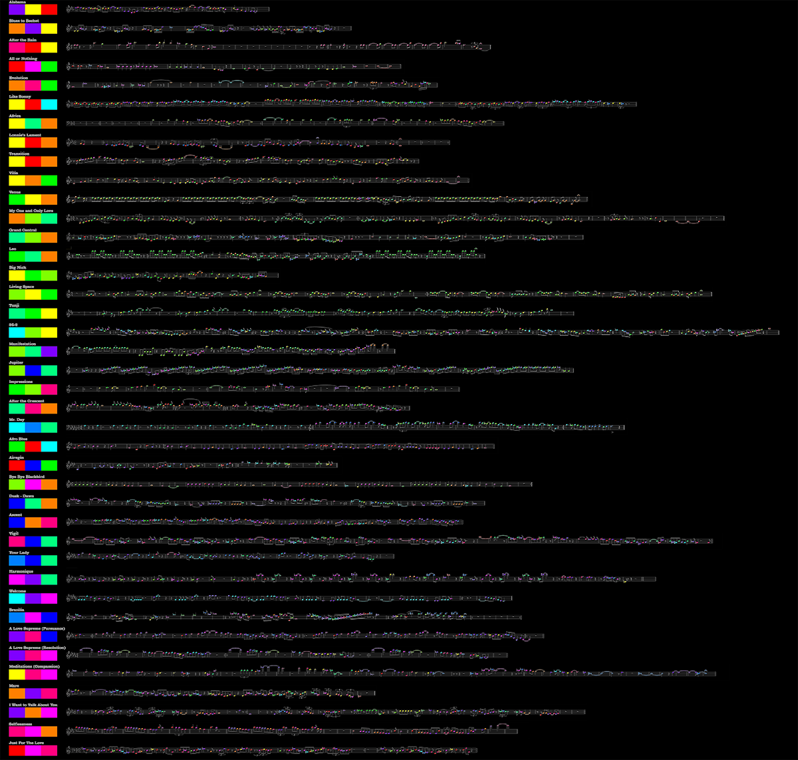

The relationship between music and color has a wide and ambiguous history. The sound of music on human ears and the colors received therein have synesthetically been explored by musicians since the beginning of written lyrical modes. Consider the sanguinisch color-titled track by Elvis Costello, “Red Shoes,” or David Bowie’s track, “Black Tie White Noise,” which seems to infer more than just colors and incorporate metaphor, tying colors as signs to their semantic objects. Even further back we find “Misty Blue,” by Ella Fitzgerald and Paul Hindemith’s “Mathis de Maler,” which translates to “Mathis the Painter,” suggesting a limitless experience of color by the painter’s palette. Such color-inspired titles are the foundations for our data visualization, Amalgamation. The idea behind Amalgamation rests in its structural appearance and it’s colorization. Though color is not tied to musical pitch, we have assigned different colors to specific notes using the Circle of Fifths. These colorizations emphasize the closeness between sonically similar notes, such as C, F, and G, all in the "red" register. Similarly, distant tones such as C and F# (a tritone) are also represented by having opposite color assignments. In terms of data, we are operating under the argument that a song is a musical object--therefore, the recording of that music object onto a staff or score constitutes a dataset. Our main objective is to display a visual, pedagogical relationship between color and sound by using John Coltrane’s greatest music. The music accompaniment featured in the visualization serves merely as a guide for the jazz saxophone panoramic scores on the screen. While those who possess synesthesia may enjoy added effects, Amalgamation is meant only to enhance our understanding of melodic changes by using color. Differences in color are more intuitive than differences in pitch, i.e., we know the difference between green and blue and how those colors relate to others in a palette. This allows those who do not read music or have been trained in aural comprehension to understand the relationship between notes and pitches in a more straightforward manner. With current biological theories suggesting that our neuronal receptors do more “creating” than “receiving/recording” in everyday perception, visualizing Coltrane’s jazz scores may affect Coltrane’s sound in multifarious ways. To navigate Amalgamation, click on the image to the right, then scroll through the palettes until you reach a desired song. Click on the track’s palette in order to play the audio file assigned to the panoramic score. Afterwards, follow the notes with your finger, tracing the melodic journey of the colorized tones. |
 |
Stefano Cagnato and Christopher Uller
{kind=link}